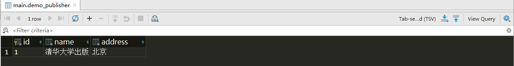

上篇文章讲解了 Django 如何创建模型，本文将继续讲解如何对模型进行增删改查操作。
1.前言
当我们建立好数据模型，Django 会自动为我们生成一套数据库接口相关的接口。这套接口称为 QuerySet API。为什么叫 QuerySet ? 因为从数据库中查询出来的结果一般是一个集合，这个集合叫做 QuerySet。
为了方便理解，我继续使用上篇文章的例子。另外方便我们在打印对象信息时，能得到对象的信息。所以我们需要对之前的代码做下修改。分别为每个模型类添加一个方法 unicode()。 unicode() 方法告诉 Python 如何将对象以 Unicode 的方式显示出来。 为以上三个模型添加 unicode() 函数后，就可以看到效果了：
1 | from django.db import models |
unicode() 方法可以进行任何处理来返回一个 unicode 对象。总所周知，Python 内部对字符串都是使用 Unicode 来保存的。不像字符串那样，有什么 UTF-8、GB2312 等编码。所以我们在Python 中处理 Unicode 对象的时候，你可以直接将它们混合使用和互相匹配而不必去考虑编码细节。
2.创建对象
为了更加直观的操作数据库，我使用 Django 的 API 来讲解。在项目的目录下，打开终端执行以下命令：
1 | python manage.py shell |
然后在终端中依次输入以下代码：
1 | # 前面的 >>> 是终端自带的 |
接着使用 Pycharm 的 Database 功能，查询 demo_publisher 表，你会发现新增一条数据。

现在来说说刚才发生了什么。第二行代码，即初始化一个 Publisher 实例， 这个实例并没有对数据库做修改。只有调用了 save() 函数，记录才会提交到数据库。所以， 使用这种方法创建实例，最后一定要调用 save() 函数。
另外上述方法来创建实例，另外还有 3 种方法：
1）方法2
这种办法可以算是方法 1 的变形。
1 | from demo.models import Publisher |
2）方法3
这种办法是用到 objects.create() 函数
1 | from demo.models import Publisher |
3）方法4
这种办法是用到 objects.get_or_create() 方法。使用这种办法有好处也有坏处。好处是可以防止重复插入；那么坏处就是插入速度要相对慢些，因为它要先查询。
1 | from demo.models import Publisher |
返回结果跟其他方法返回结果有点不同，它返回是一个元组。第一个是 Publisher 对象；第二个为一个布尔值，如果能新建成功为 True，已经存在则为 Flase。
如果模型中存在有一对多，多对一，多对多的关系，先把相关的对象查询出来或者创建出来，才能创建该模型。例如我们要创建 Book 对象，首先要创建 Author 和 Publisher 对象。具体代码如下：
1 | import datetime |
3.查询对象
Django 提供在查询数据功能方面做了很多优化工作， 这让我们查询数据有千万种方法。
3-1.查询单条数据
其实在上面的例子， 我们已经运用到单条数据功能。没错，就是使用 get() 方法来获取单条数据。
1 | pub = Publisher.objects.get(name='清华大学出版社') |
3-2.查询多条数据
如果现在我们需要查询符合某个条件的数据，get() 只能返回一条数据，无法满足我们的需求。所以我们需要用到过滤器 filter。
1 | from demo.models import Publisher |
查询多条数据的返回结果为 QuerySet，这部分等会继续讲解。
另外 filter 还支持其他过滤条件，例如
1 | # 正则表达式 |
如果要查询全部数据或者一段连续区间的数据，可以使用 all() 函数
1 | # 查询所有数据 |
[:3] 是用到 Python 中的切片操作。因为上限从 0 开始可以忽略不写，所以它等同于 [0:3]。查询出来结果没有包含上限的值，即下标为 3 的值。[:3] 只查询下标为 0, 1 ,2 的数据。
但是这里比较特殊，QuerySet 对象的 id 是从 1 开始的，所以 [:3] 表示 [1:3], 返回 id 为 1, 2, 3 的对象。 另外，这种切片操作时可以节约内存的。
4.更新数据
更新数据操作，一般是在查询数据后才执行。
4-1.更新单条数据
更新单条数据也有两种方法，其中一种的用法跟使用方法 2 创建对象类似，另一种则是使用 update_or_create() 。具体代码如下：
1 | # 方法1 |
update_or_create() 方法是以模型的其中一个属性去匹配，如果数据库中有匹配数据就更新后面的值，否则则创建新的数据。
4-2.更新多条数据
批量更新多条数据，一般是在 all()，filter() 后面执行 update() 函数
1 | from demo.models import Publisher |
5.删除数据
删除单条数据或多条数据，用法跟更新数据类似。具体就不逐一展开讲解了，大概说下用法即可。删除单条数据，获取数据，然后调用 delete() 函数。删除多条数据，同样在获取数据后调用 delete() 函数。
6.QuerySet 用法
前面讲到，使用 all()，filter() 查询多条数据，返回的结果是一个 QuerySet 对象。它不是个列表，但是可以使用** list() 将其转变为列表**。
1 | from demo.models import Publisher |
6-1.可跌代性
QuerySet 是一个可迭代的对象。因此，可以使用 for 循环来遍历。代码如下：
1 | # 在 views.py 中 |
你会在 Pycharm 的控制台上看到查询的数据。
6-2.支持排序
QuerySet 支持对查询结果排序。例如将出版社按照名称来排序，
1 | # 在 views.py 中 |
6-3.组合查询
QuerySet 还支持跟 SQL 语法中的组合查询，具体用法如下：
1 | # 查询结果中同时满足 name=清华大学出版社 和 address=上海, 这两个条件 |
6-4.其他
前面说到切片操作的区间是从整数到无穷大的，在Python 语法中还有负查询，即区间是从负无穷大到 0。可惜的是 QuerySet 是不支持负查询。
但是也有替代方法
1 | # 使用 reverse() 将 QuerySet 的顺序倒置下 |
如果还要获取 QuerySet 里面存放对象的个数，可以使用 count() 函数来查询数量。内部实现是用执行 SELECT COUNT(*) SQL 语句。
1 | count = Publisher.objects.all().count() |
7.源码
如果你想获取项目的源码, 点击按钮进行下载。


 - 极客猴&pics=https://s1.ax1x.com/2020/05/15/YsXwse.jpg&summary=上篇文章讲解了 Django 如何创建模型，本文将继续讲解如何对模型进行增删改查操作。)
 - 极客猴&pics=https://s1.ax1x.com/2020/05/15/YsXwse.jpg&summary=上篇文章讲解了 Django 如何创建模型，本文将继续讲解如何对模型进行增删改查操作。)
 - 极客猴&pics=https://s1.ax1x.com/2020/05/15/YsXwse.jpg&summary=上篇文章讲解了 Django 如何创建模型，本文将继续讲解如何对模型进行增删改查操作。)